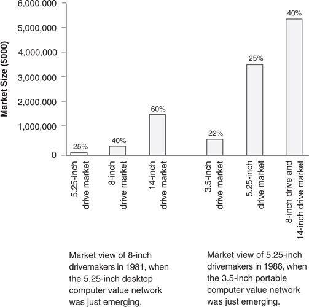

What lies behind this asymmetric mobility? As we have already seen, it is driven by resource allocation processes that direct resources toward new product proposals that promise higher margins and larger markets. These are almost always better in the northeast portions of trajectory maps (such as Figures 1.7 and 3.3) than in the southeast. The disk drive manufacturers migrated to the northeast corner of the product-market map because the resource allocation processes they employed took them there.
As we saw in chapter 2, a characteristic of each value network is a particular cost structure that firms within it must create if they are to provide the products and services in the priority their customers demand. Thus, as the disk drive makers became large and successful within their “home” value network, they developed a very specific economic character: tuning their levels of effort and expenses in research, development, sales, marketing, and administration to the needs of their customers and the challenges of their competitors. Gross margins tended to evolve in each value network to levels that enabled the better disk drive makers to make money, given these costs of doing business.
In turn, this gave these companies a very specific model for improving profitability. Generally, they found it difficult to improve profitability by hacking out cost while steadfastly standing in their mainstream market: The research, development, marketing, and administrative costs they were incurring were all critical to remaining competitive in their mainstream business. Moving upmarket toward higher-performance products that promised higher gross margins was usually a more straightforward path to profit improvement. Moving downmarket was anathema to that objective.
The obviousness of the path toward profit improvement is shown in Figure 4.2. The three bars on the left depict the size of the desktop, minicomputer, and mainframe computer value networks in 1981 and are labeled with the characteristic margins enjoyed by disk drive makers in each of those networks. Gross margins are clearly higher in higher-end markets, compensating manufacturers for the higher levels of overhead characteristic of those businesses.
The differences in the size of these markets and the characteristic cost structures across these value networks created serious asymmetries in the combat among these firms. Firms making 8-inch drives for the minicomputer market, for example, had cost structures requiring gross margins of 40 percent. Aggressively moving downmarket would have pitted them against foes who had honed their cost structures to make money at 25 percent gross margins. On the other hand, moving upmarket enabled them to take a relatively lower-cost structure into a market that was accustomed to giving its suppliers 60 percent gross margins. Which direction made sense? A similar asymmetry faced the makers of 5.25-inch drives in 1986, as they decided whether to spend their resources building a position in the emerging market for 3.5-inch drives in portable computers or to move up toward the minicomputer and mainframe companies.
Committing development resources to launch higher-performance products that could garner higher gross margins generally both offered greater returns and caused less pain. As their managers were making repeated decisions about which new product development proposals they should fund and which they should shelve, proposals to develop higher-performance products targeted at the larger, higher-margin markets immediately above them always got the resources. In other words, sensible resource allocation processes were at the root of companies’ upward mobility and downmarket immobility across the boundaries of the value networks in the disk drive industry.
The hedonic regression analysis summarized in chapter 2 showed that higher-end markets consistently paid significantly higher prices for incremental megabytes of capacity. Why would anyone opt to sell a megabyte for less when it could be sold for more? The disk drive companies’ migration to the northeast was, as such, highly rational.
Figure 4.2 Views Upmarket and Downmarket for Established Disk Drive

Source: Data are from various issues of Disk/Trend Report, corporate annual reports, and data provided in personal interviews.
Note: Percentages above each bar indicate typical gross margins in each value network.
Other scholars have found evidence in other industries that as companies leave their disruptive roots in search of greater profitability in the market tiers above them, they gradually come to acquire the cost structures required to compete in those upper market tiers. 1 This exacerbates their problem of downward immobility.